2025/2026 Red River Gorge 紀錄分享
前言
和前一篇一樣，本文旨在提供基本資訊，協助有興趣的人規劃旅程，也希望inspire更多人（若有機會）去體驗不同國家的岩場。
基本資訊
Red River Gorge（RRG）位於 Kentucky 中部，是全球最知名的運攀岩場之一。這裡的厚層砂岩經長年侵蝕，形成連綿的overhang，提供理想的動作與摩擦力。RRG 的運攀路線超過 4000 條，難度從初級到 5.14 皆有，是追求 pump 與耐力型路線者的天堂。這裡許多路線外傾角度大、路線長且走勢立體，需要良好的力量和耐力。
雖然 RRG 以運攀為主，但也有一些不錯的傳攀路線，只不過整體數量與使用率遠不如運攀。
2025
人員：昊謙、B、Y、Z、J、N、A等
日期：2025/3/20-23 = D0-D3，D0晚上開車出發、D3下午回家。
2026
人員: 昊謙、Y、Z、P、M（D1-5）
日期: 2026/3/14-21 = D1-D8，D1早上開車出發、D8早上開車回家
天氣
這裡最好的攀爬季節是春天與秋天，冬天可以輕易達到0度以下，且路線會積雪或結冰；夏天則濕熱，逼近30度。春秋雖然有時會遇到下雨，但根據網路上的分享，即使下雨還是能找到一些能爬的地方。
交通
我們是從Illinois開車過去，從Chicago約7小時、Champaign約5.5小時。也可以搭飛機+租車，無論如何需要有車才能行動。強烈建議要有4WD，因為許多經典的岩場需要4WD才能進去，例如The gallery、Chocolate factory、Drive-by crag等（或者停外面再走很遠的approach進去）。
住宿及飲食
對於攀岩者最常見也最便宜的選項是camp在Miguel’s。附近也有一些airBnB的選項。
Miguel’s Pizza
攀岩人的Pizza店，兼作露營區、gear shop。露營就是一大片空地給大家隨便紮，早上六點前付費是$4的樣子，超過會變貴，上網預定及付費，拿車牌號碼上去填。沒有個別的fire ring，但有一個公共的，有時有人會在那邊生火唱歌。還有付費shower、有過濾水的機器（在洗碗那間的最右邊，不過2026去的時候壞了，要過濾水得直接去櫃檯要）。餐廳樓下的區域是大家滑手機用Wifi、充電的地方。
Gear shop賣很多裝備和衣服，基本上運攀需要的裝備都買得到，甚至有一些傳攀裝備。另外還賣gas（沒有打火機，記得自己帶），也賣了一點紀念品。
若要自炊，有一區是給大家煮飯的，旁邊有很多架子給大家放廚具和食物。這裡有屋簷但在戶外所以有點冷，可以煮完後到地下室吃。往西北方開15分鐘左右有一家Groceries（Kroger）可以買食材。若要外食，Pizza蠻好吃的，平均一個人約$15。
也有付費shower，5mins/$2，用8個quarters付，投完幣後馬上開始出水，水很熱。似乎有兌幣機，不過也有人遇過兌幣機壞掉，所以也許自己準備比較保險。
我用Mint，在整個RRG區域幾乎都沒有訊號。如果要在帳內有網路，紮營可以紮得離主建築進一點。
距離各攀岩區域開車約20分鐘左右吧。
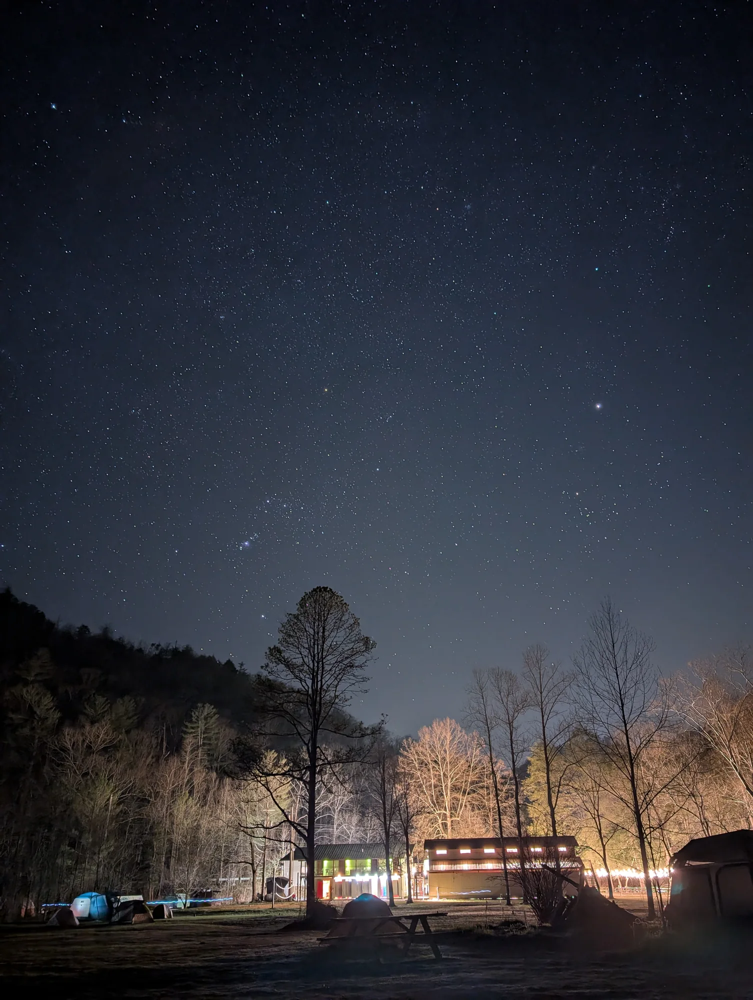
Miguel’s
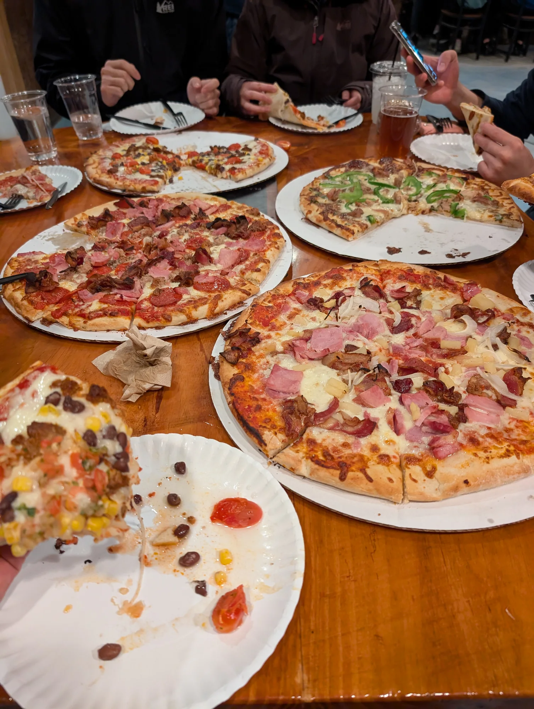
Pizza很好吃，從近到遠分別是Hawaii、meat lover、chicken BBQ和Mexico。
攀岩
岩質
這裡有很多牆都是一大堆洞，大洞就成為jugs和slopers，小洞就成為pockets，沒那麼深的就成為crimps。整體來說腳點選擇很多且都不錯。手點不如關子嶺的石灰岩鋒利，摩擦力相當好，但又不會太耗手皮，相當舒適。岩質摸起來感覺比Red rock還紮實一點，這兩趟都沒有拔任何點下來。
路線資訊
The Red: 2nd Edition
Guidebook，資訊完整詳細，含路線資訊、地圖、Topo、索引等等，有一本在手還是很好用的，故推薦大家去弄一本。Miguel’s的gear shop有賣。
Mountain Project
攀岩資訊網站，也有app可以下載。App內有地圖可以定位，也可以下載離線路線資訊（注意：區域下載只會有文字資訊不會有圖片，圖片要另外點進去下載）。不過蠻多路線圖片有缺，所以主要還是看guidebook比較可靠。
裝備
- 70m繩*1，大多數路線都是60m就夠了，但是也有一些比較長的路線（例如roadside attraction），所以似乎一般還是推薦70m。
- Sport quickdraws *19
- 掛繩器：以Trango Beta Stick Evo為標準，根據Miguel’s的店員所述，至少要Standard的長度才夠（也很夠了），我們實測也是如此。Muir Valley入口處有公共的可以借。
- Trad gear：2026年我們也帶了傳攀去，兩個人加起來大概有3.5套cam，不過沒爬幾條。
- 在大多熱門的岩場anchor以mussy hooks為主，但也有rings或是chains。Local ethics是lower>rappel。
區域
RRG很大，分成很多區，各個區域之間都是開車的距離。
每一區logistics不同，有的要申請permit、要填寫waiver。有的地方需要4WD才開得進去，有的地方停車要收費。出發前記得看清楚guidebook。另外，大多數地方訊號不佳（即使是在公路上也是），所以務必先下載好offline google maps和Mountain project。
路線札記
整體來說路線都不錯，以下是我有爬的，只挑特別有印象的comment。
2025
這趟出發時手指狀況不太好，又沒人陪我爬難線，有點怕收不下來，所以基本上都挑一些簡單的爬，沒有爬什麼有特色的線。
Day 1: Boneyard
昨天半夜三點半才到AirBnB，所以大家決定睡飽才出門，約12:30才出發。今天決定爬Muir Valley的Boneyard，因為Muir Valley不用permit（停車要$15/car），不同crag距離都很近，選擇多，而Boneyard從簡單到難的路線都有，適合我們攀爬能力不一的組合。這區approach都很好找，路線很大指標明確，路線還會打上小鐵片標明路線名稱和級數（但級數會和guidebook有點出入）
The warrior's path 5.12c: 原本要爬隔壁的5.9熱身，結果大家一個不留意就上錯路線了，爬到難關了才發現。整體來說是crimp爆、連續有張力的路線，雖然動作不特別有趣但整體還是不錯的。最後還得自己上去把這條收下來。
Lucy goosey 5.10b: 就普通的耐力10b
Armed insurrection 5.10d: 很好玩的線，推。
Cinderella 5.9+
Day 2: Bruise Brothers
這天一樣爬Muir Valley，不過改爬南邊的Bruise Brothers，這區簡單的線很豐富，地面上甚至打了anchors給大家練習操作，不過就是沒什麼5.11+的線，爬起來有些不夠過癮。
Trundling Kentucky 5.7
Sweet Jane 5.8
Jungle Trundler 5.11a
Hey There, Fancy Pants 5.10c
Rising 5.11a: 本趟旅程MVP，是另一條路線CH4的extension，爬完5.7後接著翻一個大天花板，手點又大又舒服（有點像笑傲江湖那樣，相較之下讓我想起龍洞校門口的冥想...但難度也差很多就是了），舒服地做帥氣的V3天花板抱石動作。天花板底下有fixed draws。
Don’t Take Yer Guns to Town 5.10c: 也是舒服的翻天花板路線，不過天花板太小，相形見絀。
Send me on my Way 5.9: 起攀一條掌裂隙，不過也可以不用。
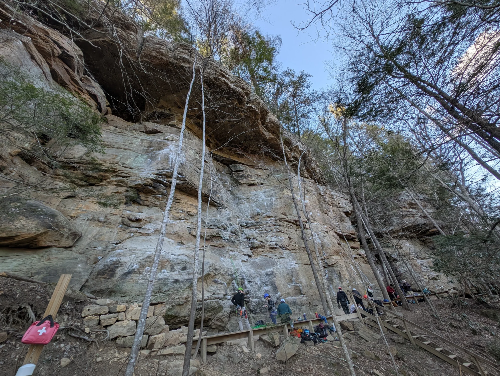
Bruise Brothers的Main Wall左半區。
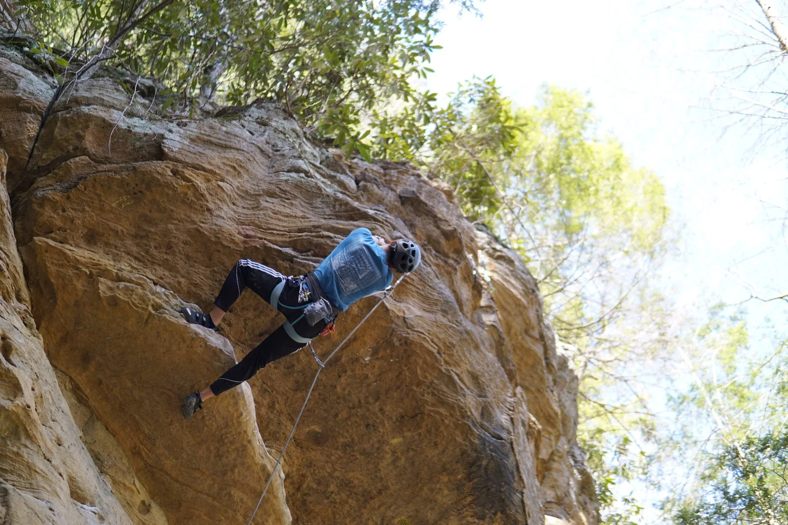
Rising 5.11a的天花板。PC: N。
Day 3: Left Flank
爬Northern Region的Left Flank。停車場只有一個，guidebook說亂停會被抓，所以最好早點來。Approach路線Guidebook和MP的文字描述都是對的（過了第一個橋之後左邊岔路上切），但Guidebook的地圖是錯的。我看著guidebook的地圖就很開心的往前走，結果一直找不到上切的岔路，來來回回走了好幾次，最後隊友有拍步道口的地圖比較之下才發現岔路在更早之前的地方。
這區有很多5.11-13的外傾路線，看起來超漂亮，沒有多留時間在這邊爬實在很可惜。
今天要開車回家，所以只爬到15:00。
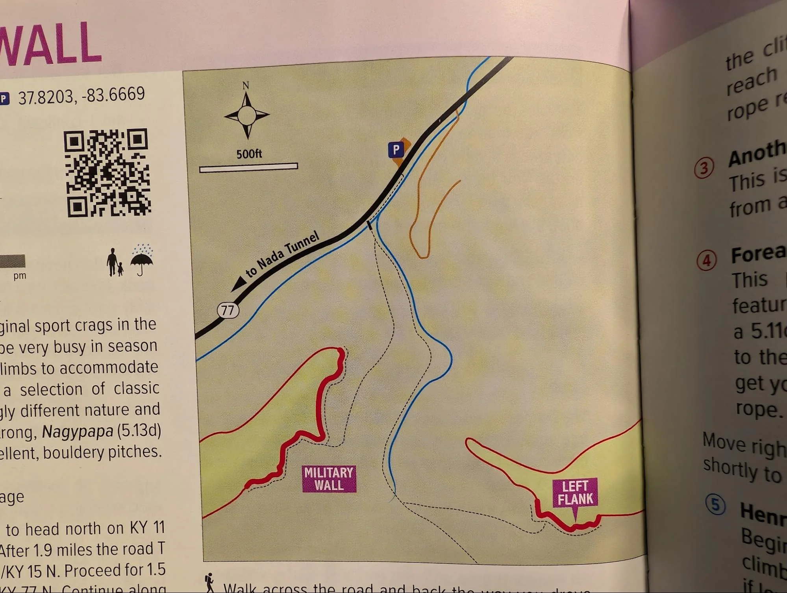
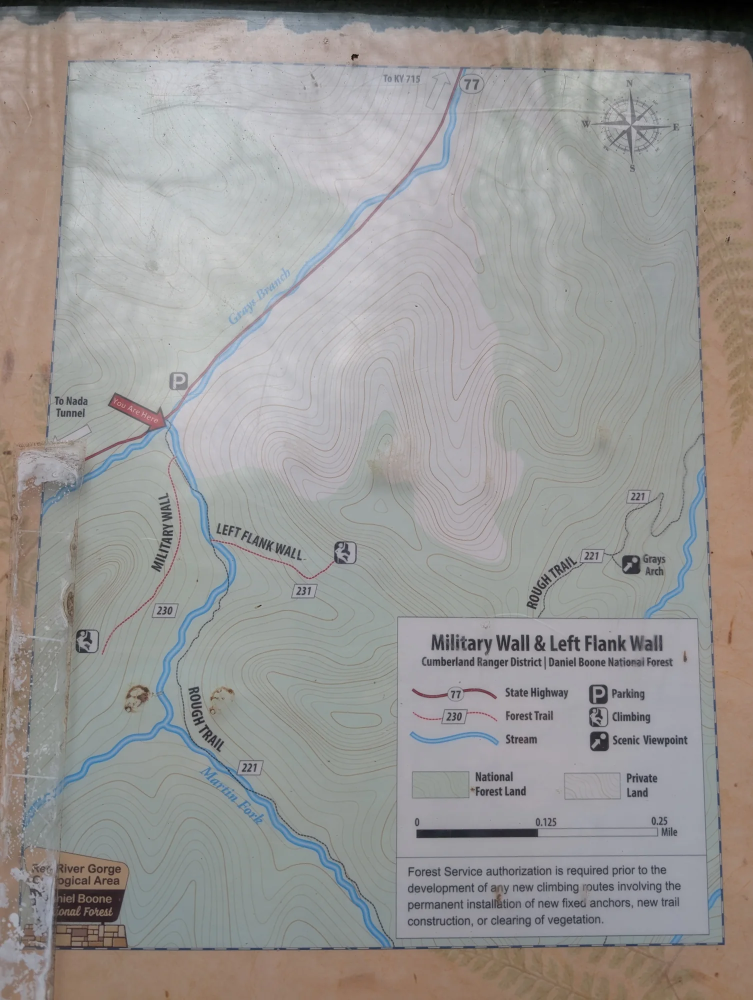
圖左：Guidebook的地圖；圖右：步道入口處的地圖。注意岔路的位置大不相同。
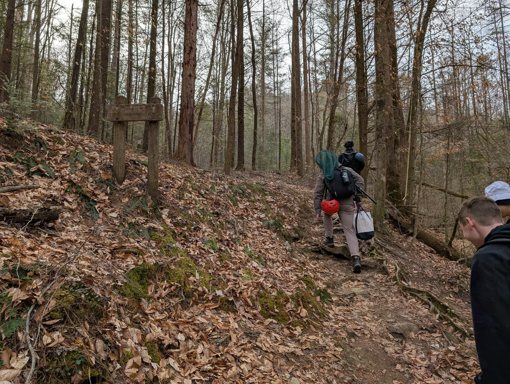
岔路與牌子
Face Up to That Crack 5.8: Mixed climb，中間有條漂亮的裂隙，可以插1~2支cam （#1-#2)。我們沒有cam但是前一組很好心的留在牆上給我們用，我lead上去之後再把他們裝備換下來。有裂隙很酷，是挺舒服的掌裂隙。
Maypop 5.11a: 起攀難關蠻好玩的。
To Defy the Laws of Tradition 5.10a: 第二個快扣的地方有個難關，只有一動但也是蠻酷的。
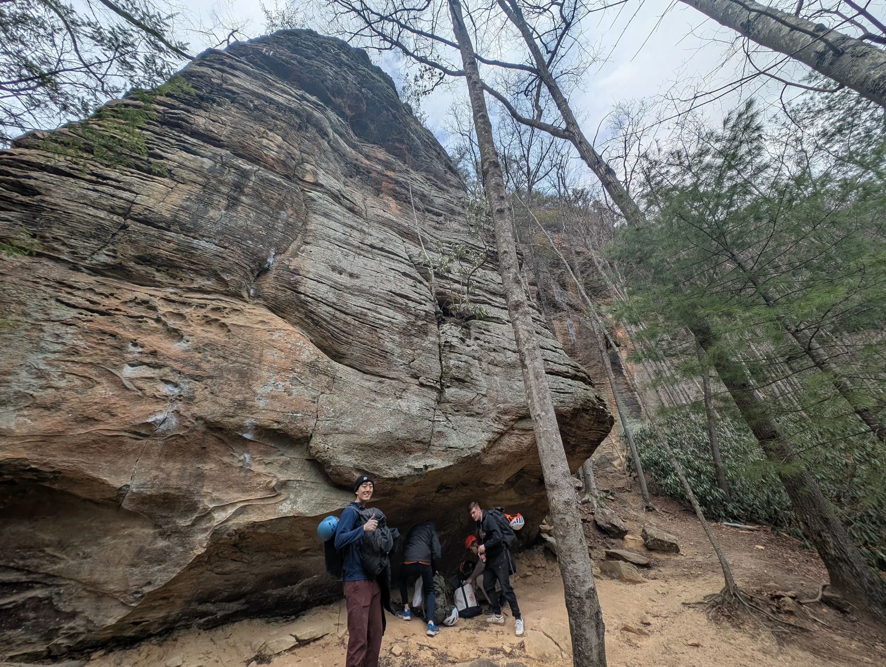
左邊白粉處是Maypop。往右走還有其他漂亮的外傾牆。
2026
冬天爬完Joshua tree後回家休養了一個月開始復健，到這趟出發前其實手指狀態已經不算糟了，抓點基本上都不太會痛，可以放開來爬。這次對手指比較有信心了，所以摸了很多12，還如願摸了一條13。只不過因為沒時間準備，基本上耐力是0，爬線的耐力都只能很保守的用，難線基本上都是draw-to-draw地爬，好像沒有一條有send。但爬到很多好玩的線還是很開心的。
以下部分照片PC：M、Z、Y。
Day 1: Drive-by Crag
走到岩場才發現忘記帶掛繩器，還好這幾條起攀都蠻簡單的。這裡開到P5停車場需要4WD，否則就得停在更外面的P1再走進來，蠻遠的。
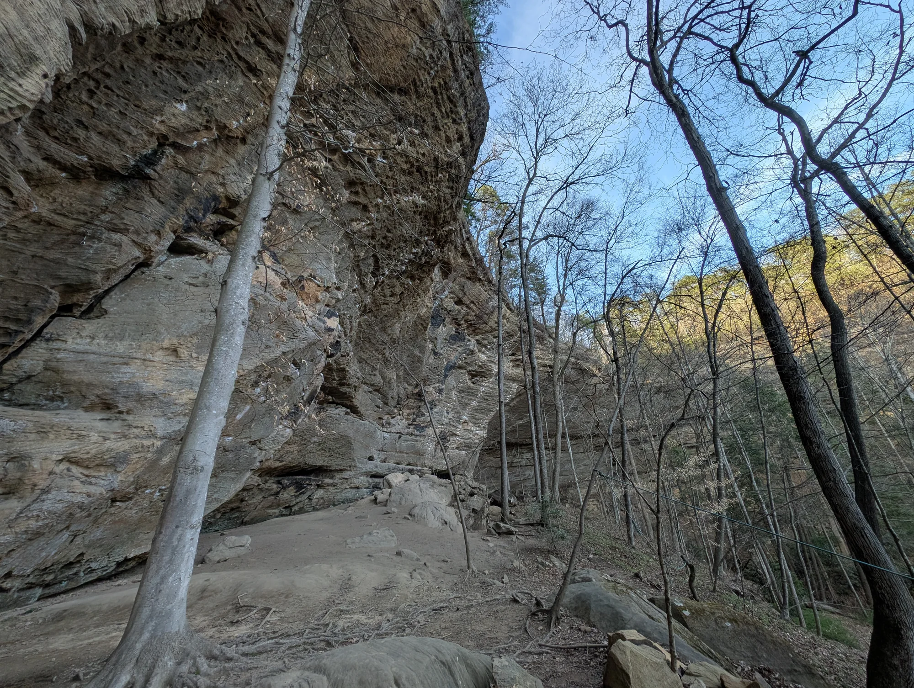
這區靠尾端有一面超帥的外傾，全部5.13起跳，可惜初來乍到還有點怕，而且週末人有點多，沒有鼓起勇氣上去爬。上面滿滿的permadraws。最裡面還有更陡的roof，不知道有沒有open project在上面。
Make a wish 5.10b
A wave new world 5.10c
Breakfast burrito 5.10c/d
Whip-stocking 5.11a: 蠻好玩的把手線。不spoil別人的onsight就不細說，但我覺得這條是蠻適合拼onsight的線。
Day 2: Military Wall
小推這個crag。到的時候遇到一群Montreal來的岩友在Fuzzy undercling上熱完身後爬底下的三條12，跟我推說不錯，爬了之後確實覺得很不錯。
Possum Lips 5.10d: Slab
Fuzzy Undercling 5.11b: 起攀難關，後面全是把手。
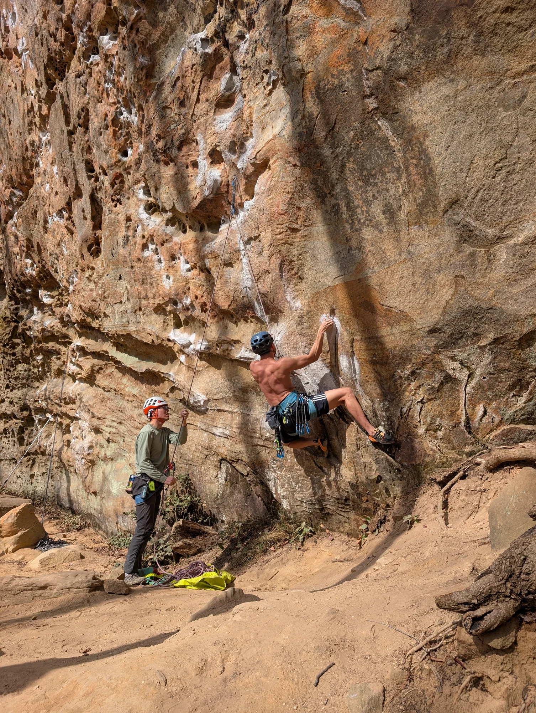
Fuzzy Undercling的起攀crux，聽說很Technical，時常有人穿approach shoes就上了（？），但我就是一步左手again用力，我就爛XD。最後沒用上圖這個Beta。
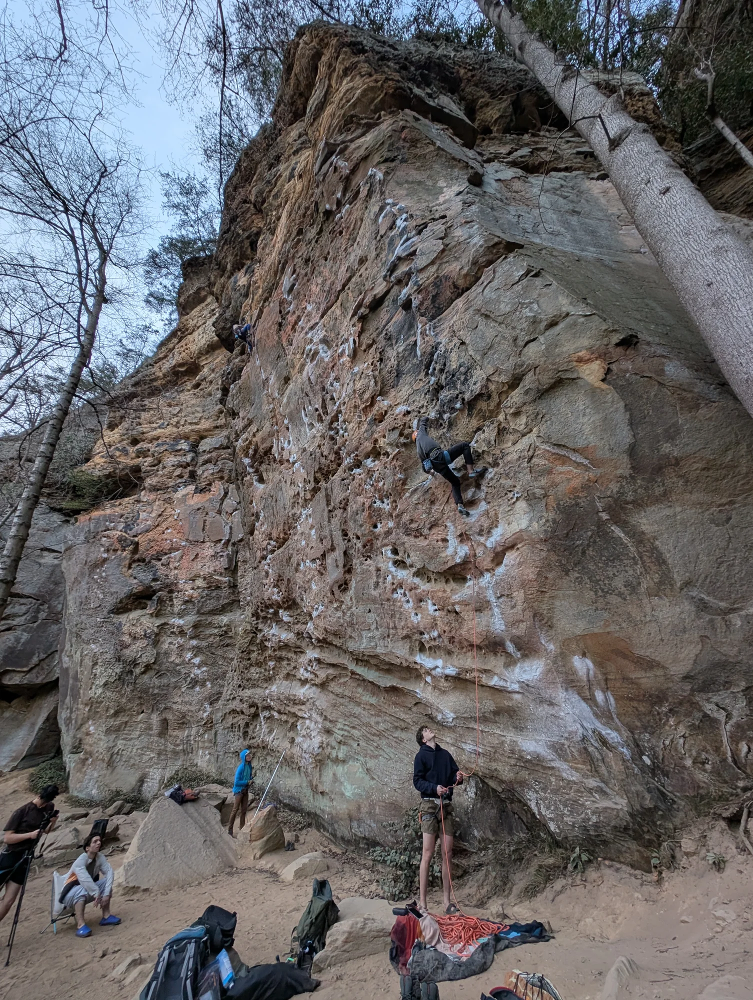
從右邊岩角數過來四條白粉線就是上面和底下三條線，時常遇到白粉多到不知道哪個才是好點。
接著底下這三條12都是3顆星都很讚（以下稱為經典RRG style）。在同一面牆上，都是比較外傾、需要力量和耐力的線。大致上都是手點不錯的section夾幾個點比較爛的crux。都很推。三條起攀都有點用力，還好有掛繩器。這三條好像很熱門，點被拍滿白粉，多到看不出哪個才是好的洞。這面牆幾乎沒有permadraw，要自己掛自己收。
Gung Ho 5.12b: 相較於其他兩條來說比較簡單一些
Tissue Tiger 5.12b: 中間有個明顯的難關，這趟第一次大Fall，爽。
Reliquary 5.12b: 明顯比右邊兩條難。上面難關前的Hueco有個kneebar蠻不錯的，但最好有kneepad比較舒服。Top上面有超大點但是要找一下。
中間還跟M去看了Super slab (5.12+)和All things considered (5.11d)，我因為想回去在天黑前爬Reliquary所以兩條都沒摸，但看起來都是蠻壯觀蠻有趣的。
Day 3: Roadside Crag
這天爬完第一條下來就開始下雪，一路下到滿地積雪。除了底下這兩條之外，其他還有幾條裂隙看起來很不錯。小推crag。這區要記得提早申請permit！
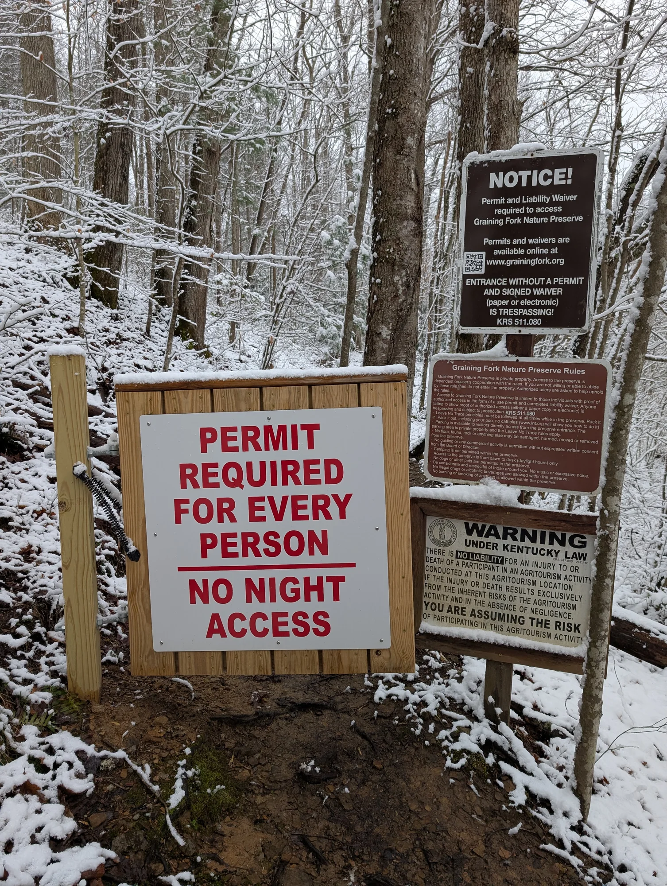
入口處有牌子提醒要有permit才能爬
Five finger discount 5.8: 看上去是finger crack但其實從頭layback到底，很漂亮的裂隙也蠻簡單的。
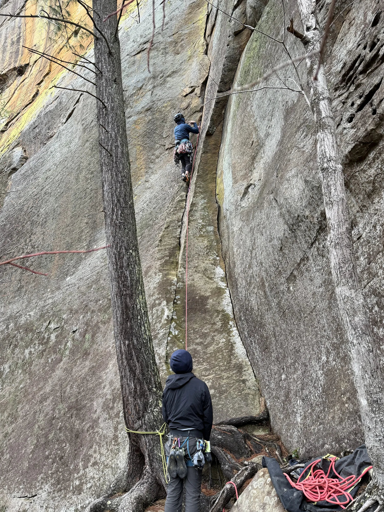
Five finger discount
Roadside attraction 5.7: 大推好線！在這之前爬了一條幫Y看gear placement的時候冷到手指沒知覺完全不想再上牆，但看Y很想爬這條就想說那就爬一下吧畢竟評分那麼高，還好有上超值得。大部分動作都蠻舒適的，裂隙是舒服的掌裂隙，裂隙漂亮風景也好。我們爬這條的時候在下大雪，雪融在牆面上弄得有點濕，但裂隙還算乾。我上去打算要link-up所以把我和Y兩個人所有的cam一共3.5套都帶上了，但實際上路線應該沒有標的那麼長（MP標36m），#2用了三支之外其他其實正常兩套就很夠了。我們用了70m繩可以輕鬆垂到地繩還有剩一些，感覺60m也許也夠（要試的話記得確認繩尾結打好）。
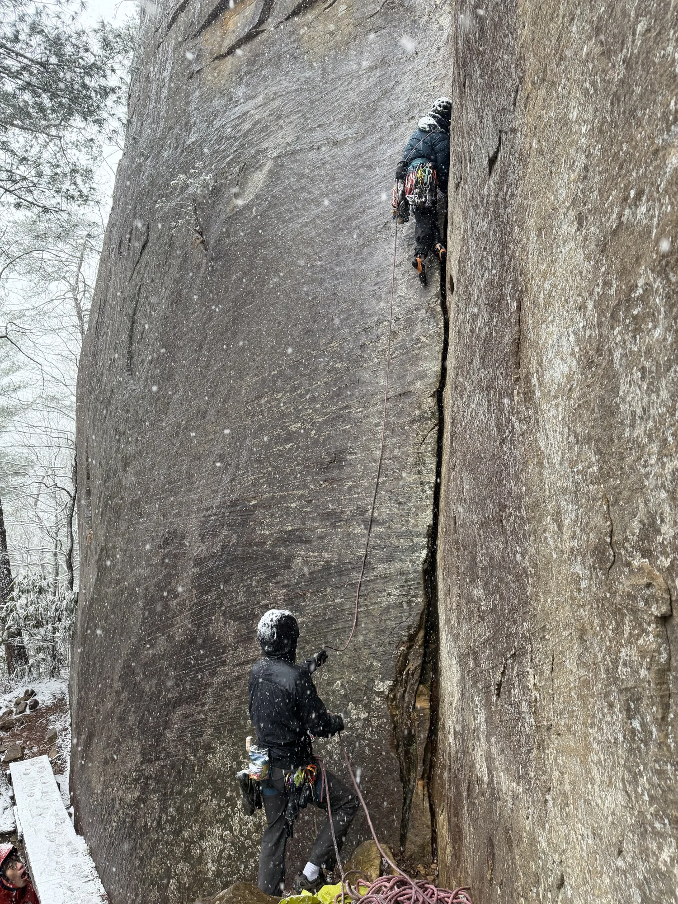
穿著一身厚外套爬Roadside attraction。起攀是舒服的掌裂隙。
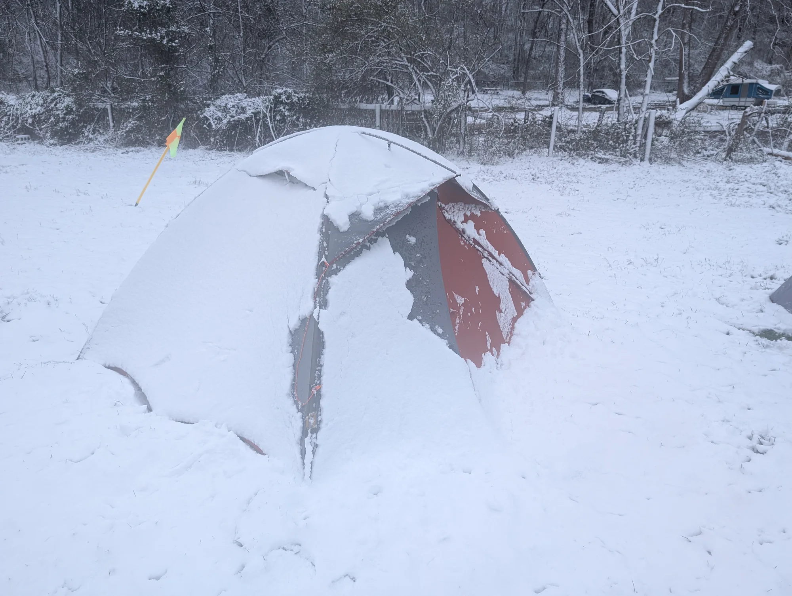
這天爬完後回到Miguel’s帳篷已蓋滿雪。
Day 4: Emerald city bouldering / Global village
早上起來太冷改計劃決定去走走加上爬點簡單的Boulder。我們去Emerald city，但明顯可以看出大家來這邊不是來Boulder的，感覺沒有太多Traffic，路線也不是太impressive，MP上也都沒什麼照片，所以我就不寫了。倒是走到步道底是Global village，有幾條裂隙看起來蠻酷的，還有一個瀑布超美。
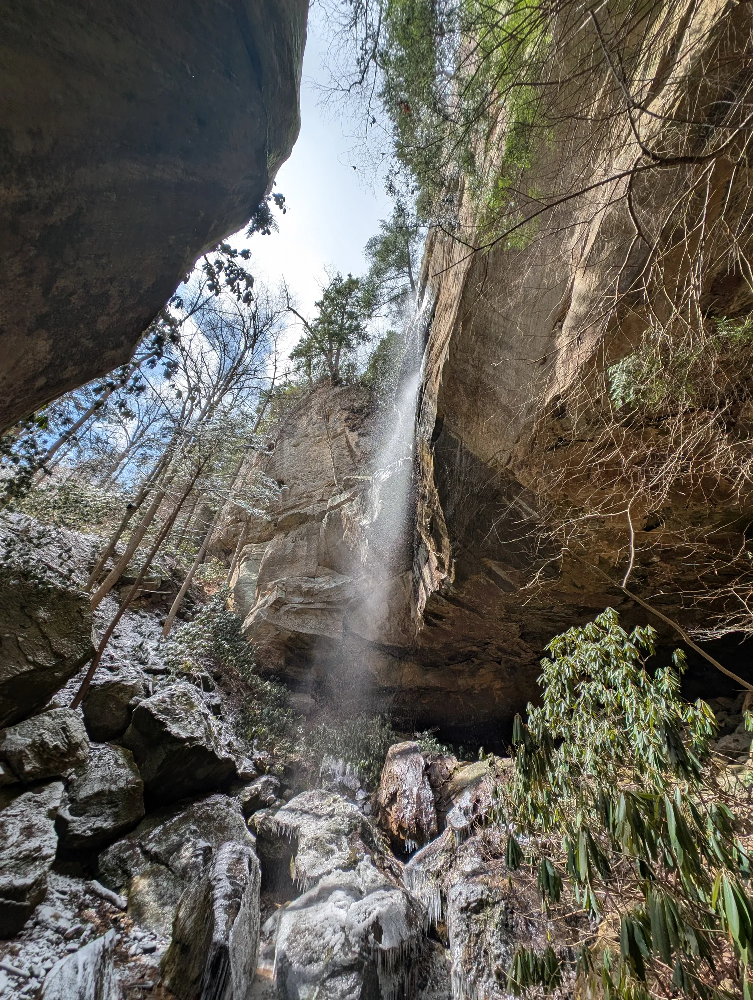
雖然瀑布沒有結冰但瀑底結了，超酷。我試圖從旁邊平台繞到瀑頂，但中間有一小段很窄，就不想過去了。
Day 5: Chocolate Factory
因為D2晚下大雨，我們怕淹水車子出不去，所以車停P走進去P2，確認其實可以開進來。
Hip to the jive 5.11b: 底下是舒服的內角推撐，上面是外傾，手點還行但沒有底下看起來那麼好。
Naked 5.12a/b: 就是經典RRG style。
Snozzberries 5.11d: 大推好線！來了必爬！怕spoil別人的onsight所以就不說太多，但我覺得這條是很適合拼onsight的線。一開始上去我還想說應該也就是bolt-to-bolt地爬，但爬到大概一半就發現感覺有機會onsight（即使我根本耐力0，這樣懂了吧？），結果最後Fall在top的前一動找不到點，噴了onsight。要不是有人在排這條催我爬完Naked接著上，應該可以爬完的，飲恨QQ。
Butane Junky 5.12b: 因為D2沒上slab覺得有點愧疚，看到連很厲害的Montreal哥都爬了好一陣子決定爬爬這條slab。蠻難的（我覺得比我有摸的其他12都難）但很有趣。
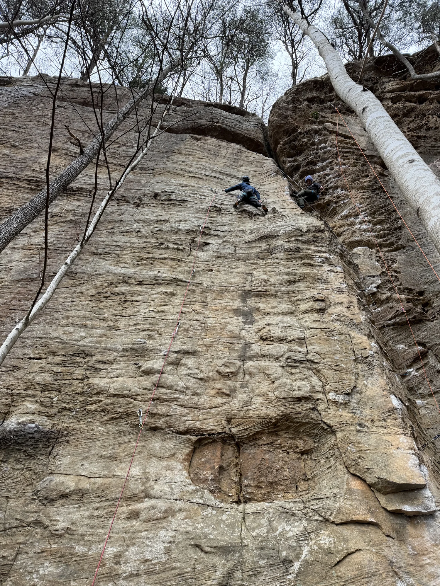
把我虐爛的slab。右邊角落裡的是Hip to the jive。
Day 6: The Gallery
大推好Crag！超多漂亮的線，如果RRG只能挑一個crag爬大概就是這個了！如果有4WD一定要來！除了我底下有爬的之外，還有一條Zen and the art of masturbation看起來超帥，可惜沒時間去爬。
Johnny B. good 5.11a: 適合暖身的線，底下是jug ladder，上面則是一小段舒適外傾。
Gold rush 5.11d: 起攀有趣，上面就是經典RRG style。在這裡遇到一個會講中文的人，乍聽之下不確定是中國還是台灣口音。
Starry night 5.11d/12a: 大推好線！一進來看到這個cave就看到這條路線超級帥，一查發現才5.12a決定肯定要爬這條。前面熱完身之後來這邊剛好看到前幾天也有遇到的一群人在摸這條，結果上不去、第一支快扣收不下來，就剛好輪我上去順便幫他們收（可以爬到第二支快扣後，從平台回去撈第一支，不必再爬一趟）。起攀其實比看起來tricky，上面就是爽翻天的roof jugfest。原本妄想onsight結果移動速度太慢，耐力遠遠不夠。這條除了第一支之外都有permadraw。
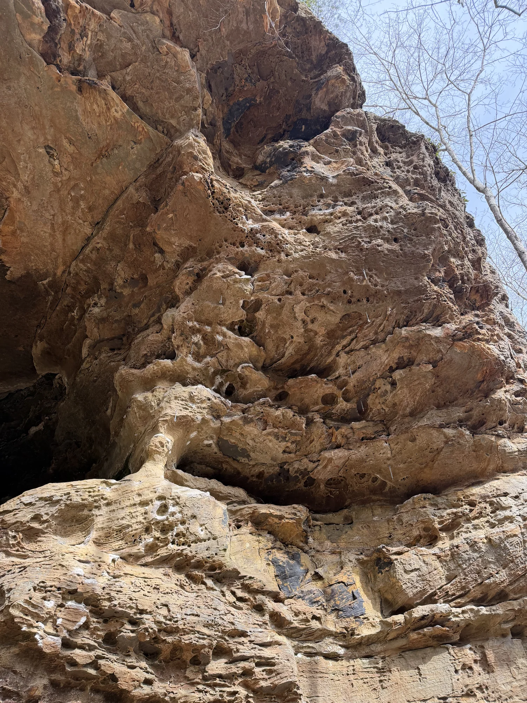
Starry night，從中間的柱子一路爬到洞口。
Calm like a bomb 5.13a: 另一面超帥的牆，看起來就像是被人狠狠用刀硬生生砍下一角一樣，看到就決定必須上去摸一摸。前半不難，就是經典RRG style，中間開始接上直裂隙處是難關，我在這裡卡了好一陣子，大fall了好多次（感激Z的耐心確保），一度懷疑是不是需要下去拿掛繩器了。推！這條除了前面3個bolts外上面都是permadraws。
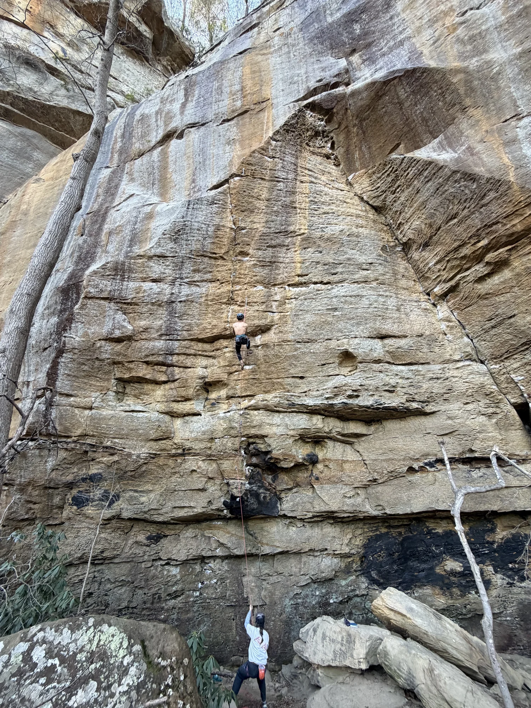
Calm like a bomb，個人覺得整趟外觀最帥的線就是這條了。我正在試crux。
Day 7: Sunbeam Buttress / The Solarium / Coyote Cliff
前一晚Y看到一條線在Solarium想爬，我看那邊也有很多評分不錯的12，附近又有sunbeam buttress有簡單一點的線讓其他人也有得爬，就想說可以爬這區。結果發現去Sunbeam Buttress是個錯誤（不推），路線普通、approach遠，手點還不是很舒適。爬了兩條就決定去別區了。
Moonshine 5.10b
大推The Solarium！有好多看起來很帥的12，可惜時間不夠只爬了一條。
Super best friends 5.12a/b: 去Sunbeam Buttress的路上經過看到這條覺得有點帥，果然爬起來超讚。感覺很像爬室內岩館，越上面傾度漸漸增加到接近水平，然後翻上去還有一段headwall。大推好線！爬完下來之後往右看發現右邊似乎就是The Red（就是那本guidebook）的封面。除了前一兩支之外全是permadraws。
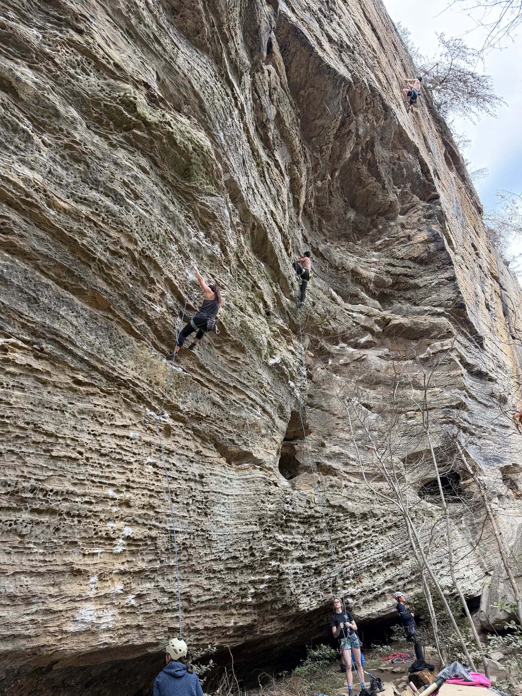
Solarium，我正在super best friends的headwall上，兩邊其他路線看起來也都超帥
為了讓大家都有得爬決定轉進Coyote Cliff。這裡的風格和前面完全不同，是vertical的style。
Golden road 5.12a: 這一週以來爬得最難的一條線，也是唯一掛都掛不完的線。其實蠻好玩的但就手點真的很爛，但又不像slab一樣可以純靠腳站起來。從起攀開始就不容易，甚至卡在第4到5個bolt之間上不去，只好下來拿掛繩器，過了這段後後面就簡單了。Guidebook上說需要good technique，看來我沒有QQ。
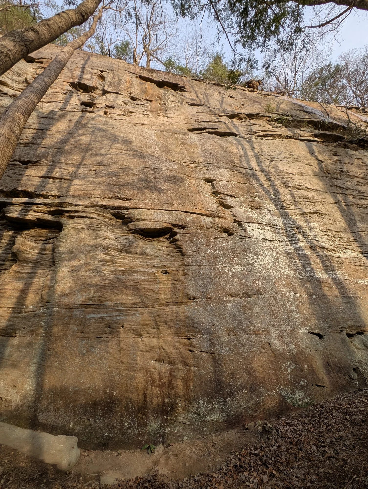
Golden road，從圖中央的小小凹洞下方起攀，過了凹洞後往右上，一路爬到最頂端的大洞。
後記與心得
2025
沒寫
2026
這次帶著比較健康的手指，終於敢放開來爬，比去年來有趣太多了，大致上都不太擔心掛不完（slab和vertical除外）。RRG真的是運攀天堂，有太多超帥超爽的線。下次真的要練好耐力再來，很多路線都是手點蠻好的，但就外傾角度比較大又連續，所以需要平時在學校很少練到的技巧和耐力（UIUC的上攀牆幾乎都是vertical的）。也許多在Kilter上爬4x4會有幫助？
感謝旅伴們一起出來玩，一週以來的互相照顧、感謝Y、Z和M的耐心確保、感謝M變出來拯救大家的瓦斯爐（甚至還有冰箱！超帥！），也感謝Z的4WD車以及開了近乎全程的車。祝Y和Z畢業順利，未來有機會再揪！